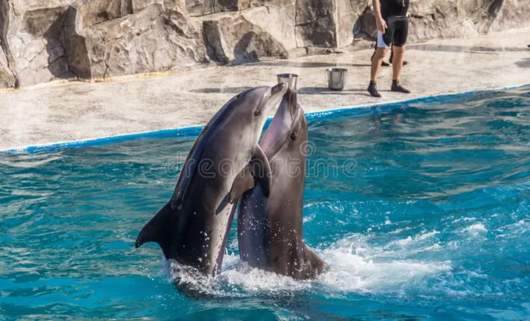

Batumi Dolphinarium - Dolphinarium in Adjara, a seaside city of Batumi, which was opened in 1966.
Dolphinarium is one of the most favorite places of Batumi visitors. It is always crowded. You will
find wonderful performances of dolphins here. The Batumi Dolphinarium was one of the largest dolphinariums in the world.
Dolphinarium is a modern design architectural building, which is equipped with the newest technology, marine life opportunities
for sea animals and amazing performances.
Show
The dolphin demonstration program is an educational performance with the elements of the show which is conducted in any weather conditions.
The show, in which 10 dolphins participate, is performed in 2 languages (Georgian, English). The fact that the spectators leave the dolphinarium
full of positive emotions is а full merit of Nini & Monica, Maya, Marco & Zorro, 2 Baby dolphins - Chibu & Khvicha and Tsitsi with her babies Olympia
& Batu. It includes about 30 acts: three dances, playing with rings and balls, balancing on the tails, unforgettable Foot Push and many other new and old stunning moments.
The amphitheater of the dolphinarium consists of 4 sectors and can host 795 spectators. The infrastructure includes the lifts and wheelchair ramps for the disabled.
Dolphin Show - Demonstration program is every day (except Mondays)
History
The Batumi demonstrative aquarium was opened on the 20th of August, in 1966. Initially, the North pacific pinnipeds, valuable fur otters and Caspian seals
were represented in it. The special impression used to make the giant tortoise of the Indian Ocean so-called “false coach”, which weighed about 100kg. The d
ecorative fish variety impressed the visitors, too. There were up to 60 species of dwellers from the freshwaters, different seas and oceans.
At the time the aquarium represents up to 100 species of fish from Black Sea, Georgian freshwaters and the decorative ones: Common Stingray (Dasyatis Pastinac
a), Thornback Ray (Raja Clavata), Sand Sole (Solea Nasuta), Mullet (Mugilidae), Long-Snouted Seahorse (Hippocampus ramulosus), Red Mullet( Mullus Barbatus Pont
icus), Brown Meagre (Sciaena Umbra) and other unique species. What about the exotic species, significant ones are the Amazon Piranha (Serrasalminae), Cichlids (
Cichlidae), south-East Asian fishes: Gouramis (Goramy), Barbus (Cyprinus barbus), Botia Macracantha (Chromobotia macracanthus), Red-Tailed Labeo (Labeo Bico
lor) and the nicest Discus (Symphysodon).
At that time it was the first demonstrative dolphinarium in the former Soviet Union. It used to belong to the greatest dolphinariums of the world. At the begin
ning of the 90-ies due to the difficulties caused by the political-economic situation in the country, the dolphinarium stopped functioning.
After a 20-year pause completely new dolphinarium was set in the motion by the initiative of Batumi City Hall.
